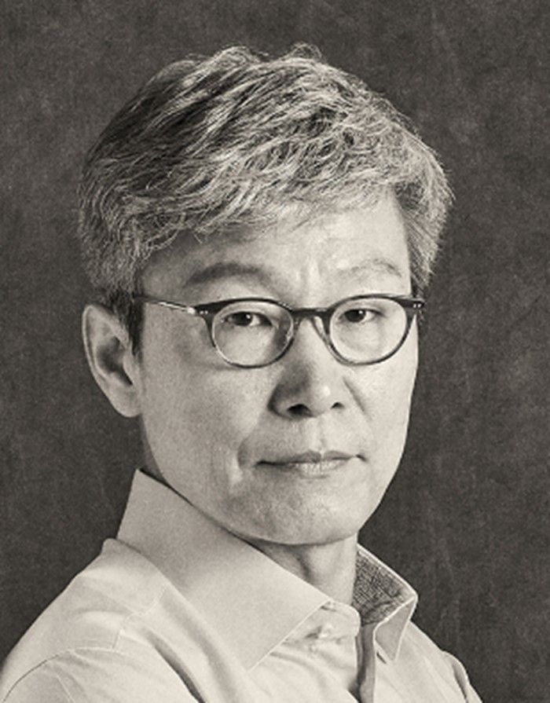
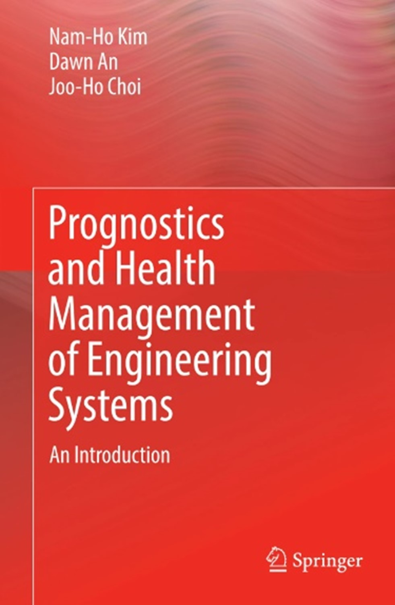

About the author
Joo Ho Choi
Emeritus Professor
Korea Aerospace University

Profile
Joo Ho Choi is an Emeritus Professor at Korea Aerospace University with over two decades of research experience in Prognostics and Health Management (PHM). His work focuses on understanding equipment degradation, diagnosing faults, and predicting remaining useful life to support maintenance decisions.
Alongside his research, he has worked to make PHM accessible to engineers, researchers, and students through books, practical training, invited lectures, and industry collaboration.
Contributions to the PHM Community
He spearheaded the first Asia-Pacific Conference of the PHM Society (PHMAP) and helped establish the Korean Society for PHM in 2018. He was elected a Fellow of the PHM Society in recognition of his contributions to the field.
Books and Educational Resources

He coauthored Prognostics and Health Management (PHM) of Engineering Systems: An Introduction with Nam-Ho Kim and Dawn An, published by Springer in 2017.
Nam-Ho Kim · Dawn An · Joo-Ho Choi
His latest book project, PHM in Practice: A Hands-on Guide to Architecting PHM Systems with Real-world Datasets, connects PHM concepts with practical implementation. It covers anomaly detection, fault diagnosis, and remaining useful life prediction using data collected from engineering equipment and systems.
Research Case Studies
The following case studies represent outcomes of his research over the past 20 years. They cover diagnosis and prognosis across a range of engineering applications, including rotating machinery, aerospace systems, manufacturing equipment, and batteries.
Diagnosis
- Bearing Health Assessment Using Vibration and Acoustic Sensors
- Linear Motion Guide Health Assessment Using Vibration Sensors
- Fault Diagnosis of UAV Planetary Gearboxes
- Train Door Fault Diagnosis Using Motor Signals
- Robot Fault Diagnosis Using a Systems Approach
- Health Indicator Construction for Crack Detection in Rotating Shafts
- Integrated Fault Diagnosis of Rotating Machinery
- System-Level Fault Diagnosis of Lubrication Systems
Prognosis
- Failure Prediction of Satellite Motors
- Kalman Filter-Based Prognosis for Drone Motors
- Aircraft Engine Life Prediction Using Sensor Data
- Lithium-Ion Battery Life Prediction for Energy Storage Systems
- State-of-Charge and State-of-Health Estimation for Hybrid Propulsion Batteries in Urban Air Mobility
- Inspection Planning for Aircraft Structures
- Turbine Engine Life Prediction Using Field Data
Industry Collaboration and Consulting
His industry work includes consulting for SEMES from 2014 to 2019 on reliability design, testing, and failure prevention for semiconductor and display manufacturing equipment.
His patented work includes system-level condition prediction, rotating machinery fault diagnosis and prognosis, and battery life prediction. A system-level condition prediction technology was transferred to ENGSTOK in 2023.
Teaching and Invited Lectures
He has delivered PHM courses, tutorials, and invited lectures for academic, industrial, and government audiences. Topics include PHM fundamentals, reliability-centered maintenance, industrial applications, and aircraft crack prognosis.
Representative teaching engagements include PHM leadership courses offered by the Korean Society for PHM, which he has taught biannually since 2019. Other engagements include short courses organized by the Korea Offshore & Shipbuilding Association and lectures at TU Delft, Zhejiang University, and Northeast Forestry University.
Contact
Emailjhchoi@kau.ac.kr
AffiliationKorea Aerospace University